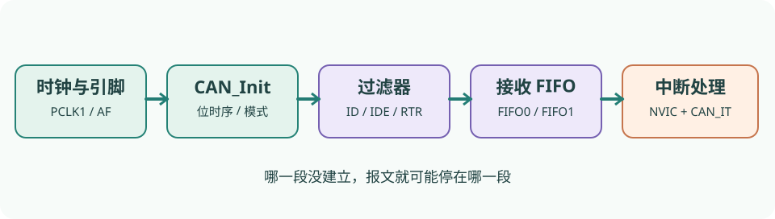
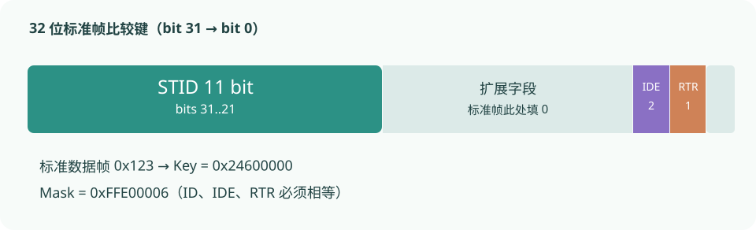

STM32 CAN 初始化：为什么能发却收不到？
把位时序、32 位过滤器与 FIFO 中断串成可验证的数据路径，使用明确的 STM32F103 SPL 示例。
“能发却收不到”，问题可能不在物理层
STM32F103 的 bxCAN 初始化要把引脚与时钟、位时序、接收过滤器、NVIC 与外设中断源组成一条完整链路。CAN 控制器即使已经进入正常模式，过滤器不接收某个 ID，那个报文也不会进入接收 FIFO。

下面的全部 C 示例限定为 STM32F103、CAN1、STM32F10x SPL 库。如果你用 Cube HAL/FDCAN，要按相应 API 的启动流程重写，不能拼装使用。
先复算 500 kbit/s，再解释采样点
PCLK1 = 36 MHz、BRP = 4、BS1 = 14 tq、BS2 = 3 tq，得到一位 18 tq：36,000,000 ÷ (4 × 18) = 500,000 bit/s，采样点为 15/18 = 83.33%。SJW = 1 tq 满足本例配置约束，但不是决定波特率的附加段。
CAN_StructInit(&can);
can.CAN_Mode = CAN_Mode_LoopBack; // 首次本地验证；上总线改 Normal
can.CAN_SJW = CAN_SJW_1tq;
can.CAN_BS1 = CAN_BS1_14tq;
can.CAN_BS2 = CAN_BS2_3tq;
can.CAN_Prescaler = 4;
// 36 MHz / [4 * (1 + 14 + 3)] = 500 kbit/s
过滤器：掩码为 0 真的是“全收”吗？
bxCAN 的 32 位过滤器将标识符与 IDE（标准/扩展）及 RTR（数据/远程）位一起比较。掩码某位为 1 表示必须相等，为 0 表示忽略该位。 因此“掩码全 0”可以接受所有类别；要只收标准数据帧 0x123，还要同时比较 IDE=0、RTR=0。

交互过滤：同一个 0x123，远程帧会通过吗？
通过：标准数据帧 0x123 匹配过滤器
本模型只复现 32 位掩码匹配逻辑，不模拟 FIFO 满、总线错误或过滤器组优先级。
// 32位掩码，只接收标准数据帧 ID 0x123
filter.CAN_FilterNumber = 0; // F103 常规型号：0..13
filter.CAN_FilterMode = CAN_FilterMode_IdMask;
filter.CAN_FilterScale = CAN_FilterScale_32bit;
filter.CAN_FilterIdHigh = 0x2460; // 0x123 << 5
filter.CAN_FilterIdLow = 0x0000; // IDE=0, RTR=0
filter.CAN_FilterMaskIdHigh = 0xFFE0; // 检查11位标准ID
filter.CAN_FilterMaskIdLow = 0x0006; // 检查IDE和RTR
filter.CAN_FilterFIFOAssignment = CAN_FIFO0;
filter.CAN_FilterActivation = ENABLE;
CAN_FilterInit(&filter);
中断能触发，为什么仍然丢帧？
每个 bxCAN 接收 FIFO 只有三个报文槽位，ISR 必须及时取走消息以释放硬件 FIFO。开启 NVIC 中断通道和 CAN_IT_FMP0 是两个不同步骤。ISR 中不做 printf、阻塞发送或耗时解析，必要时转存到预先分配的环形缓冲区。
static volatile uint32_t rx_seen = 0; // 教学统计量
void CAN1_RX0_IRQHandler(void)
{
while (CAN_MessagePending(CAN1, CAN_FIFO0) != 0u) {
CanRxMsg msg;
CAN_Receive(CAN1, CAN_FIFO0, &msg); // 读取并释放槽位
++rx_seen;
// 实际工程：将 msg 非阻塞拷贝进有界队列，并统计队列溢出
}
}
最小的初始化顺序：SPL 版本
// 需要 stm32f10x_can.h / stm32f10x_gpio.h / stm32f10x_rcc.h / misc.h
// 假设时钟树已设置 PCLK1 = 36 MHz；CAN1 走默认 PA11/PA12
int CAN1_Setup(void)
{
GPIO_InitTypeDef gpio;
CAN_InitTypeDef can;
CAN_FilterInitTypeDef filter;
NVIC_InitTypeDef nvic;
RCC_APB2PeriphClockCmd(RCC_APB2Periph_GPIOA, ENABLE);
RCC_APB1PeriphClockCmd(RCC_APB1Periph_CAN1, ENABLE);
GPIO_StructInit(&gpio);
gpio.GPIO_Pin = GPIO_Pin_12;
gpio.GPIO_Mode = GPIO_Mode_AF_PP;
gpio.GPIO_Speed = GPIO_Speed_50MHz;
GPIO_Init(GPIOA, &gpio);
gpio.GPIO_Pin = GPIO_Pin_11;
gpio.GPIO_Mode = GPIO_Mode_IPU;
GPIO_Init(GPIOA, &gpio);
CAN_DeInit(CAN1);
CAN_StructInit(&can);
can.CAN_Mode = CAN_Mode_LoopBack; // 确认本地收发后改为 Normal
can.CAN_Prescaler = 4;
can.CAN_BS1 = CAN_BS1_14tq;
can.CAN_BS2 = CAN_BS2_3tq;
can.CAN_SJW = CAN_SJW_1tq;
if (CAN_Init(CAN1, &can) != CAN_InitStatus_Success) return -1;
CAN_FilterInit(&(CAN_FilterInitTypeDef){
.CAN_FilterNumber = 0,
.CAN_FilterMode = CAN_FilterMode_IdMask,
.CAN_FilterScale = CAN_FilterScale_32bit,
.CAN_FilterIdHigh = 0x0000, .CAN_FilterIdLow = 0x0000,
.CAN_FilterMaskIdHigh = 0x0000, .CAN_FilterMaskIdLow = 0x0000,
.CAN_FilterFIFOAssignment = CAN_FIFO0,
.CAN_FilterActivation = ENABLE
}); // 先全收便于本地环回调试
nvic.NVIC_IRQChannel = USB_LP_CAN1_RX0_IRQn; // STM32F103 非连接型头文件
nvic.NVIC_IRQChannelPreemptionPriority = 1;
nvic.NVIC_IRQChannelSubPriority = 0;
nvic.NVIC_IRQChannelCmd = ENABLE;
NVIC_Init(&nvic);
CAN_ITConfig(CAN1, CAN_IT_FMP0, ENABLE);
return 0; // SPL CAN_Init 已完成退出初始化模式
}
注意 STM32F103 的接收 0 IRQ 名称通常为 USB_LP_CAN1_RX0_IRQn，对应处理函数为 USB_LP_CAN1_RX0_IRQHandler；以上独立 ISR 段落里的短名需要按芯片启动文件调整。若使用重映射 PB8/PB9，还必须额外开启 GPIOB 和 AFIO 时钟，调用 GPIO_PinRemapConfig(GPIO_Remap1_CAN1, ENABLE)，并修改 GPIO 端口。
先以全收过滤器和环回证明本地数据路径，再换成目标 ID 过滤器并切换正常模式。上实物总线之前，检查两个终端、收发器模式和第二个可以 ACK 的节点。
进一步查证
ST RM0008：bxCAN 第 24 章（不同版次章节页码可能不同）；ST F1 HAL 驱动可用于辨别 HAL/SPL 的 API 差异。涉及 IRQ 名称、过滤器数量请以工程所选芯片的 CMSIS 头文件和启动文件为准。